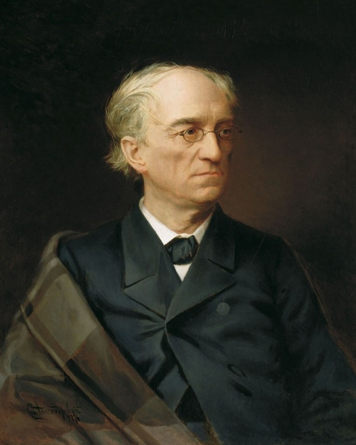

Фёдор Ива́нович Тю́тчев (23 ноября 1803, Овстуг, Орловская губерния — 15 июля 1873, Царское Село)
русский лирик, поэт-мыслитель, дипломат, консервативный публицист, член-корреспондент Петербургской Академии Наук с 1857 года, тайный советник.Фёдор Иванович Тютчев родился в родовой усадьбе Овстуг Брянского уезда Орловской губернии.Получил домашнее образование.
Под руководством учителя, поэта и переводчика С. Е. Раича, поддерживавшего интерес ученика к стихосложению и классическим языкам,
изучил латынь и древнеримскую поэзию, а в двенадцать лет переводил оды Горация.
С 1817 года в качестве вольнослушателя начал посещать лекции на Словесном отделении в Московском университете, где его преподавателями были Алексей Мерзляков и Михаил Каченовский.
Ещё до зачисления был принят в число студентов в ноябре 1818 года, в 1819 году избран членом Общества любителей российской словесности.